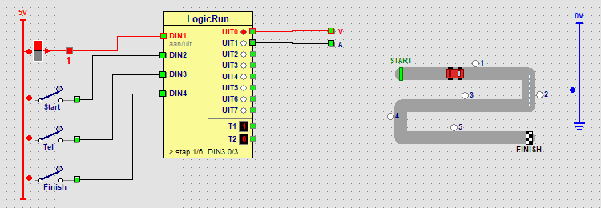

Lernpfad › Fortgeschrittene › Lektion 17 von 18

| Schritt | Ausgang | Warten auf | Was passiert? |
|---|---|---|---|
| 1 | UIT0 | 3 x DIN3 | Der Wagen fährt vorwärts. Nach dem dritten Pfosten geht es zum nächsten Schritt. |
| 2 | - | - | Er steht 2 Sekunden still (Zeit 4 × 500 ms), zum Beispiel zum Abladen. |
| 3 | UIT0 | DIN4 ein | Er fährt weiter vorwärts, bis Finish ein ist. |
| 4 | - | - | Wieder 2 Sekunden still. |
| 5 | UIT1 | DIN2 ein | Er fährt rückwärts zurück, bis Start ein ist. |
| 6 | - | - | 2 Sekunden still; danach beginnt alles von vorn. |
In der Spalte warten auf steht bei Schritt 1 3 x DIN3. Jedes Mal, wenn der Wagen an einem Pfosten vorbei ist und Tel wieder aus geht, zählt LogicRun eins dazu. Beim dritten Impuls ist der Schritt fertig. In jedem Schritt beginnt das Zählen wieder bei 0. So misst eine echte Maschine eine Strecke: Ein Sensor zählt die Löcher in einem Rad, oder ein Aufzug zählt die Stockwerke, an denen er vorbeifährt.
Lassen Sie den Wagen auf dem Hinweg an Pfosten 2 und an Pfosten 4 halten.
Setzen Sie die Bedingung von Schritt 1 auf 2 x DIN3. Wählen Sie Schritt 2 und klicken Sie zweimal auf + Schritt. Der erste neue Schritt: UIT0 ein, warten auf 2 x DIN3 (Pfosten 3 und 4). Geben Sie dem zweiten neuen Schritt die Zeit 4, ohne Ausgang: das ist die zweite Haltestelle.
Auf dem Rückweg soll der Wagen auch 2 Sekunden an Pfosten 3 halten.
Rückwärts kommt der Wagen zuerst an Pfosten 5 vorbei, dann an 4 und dann an 3. Setzen Sie die Bedingung von Schritt 5 auf 3 x DIN3. Wählen Sie Schritt 5 und klicken Sie zweimal auf + Schritt: ein Schritt mit der Zeit 4 ohne Ausgang und ein Schritt mit UIT1, der auf DIN2 ein wartet (zurück zum Start).
Wie viele Impulse bekommt DIN3, wenn der Wagen in einem Zug vom Start bis ins Ziel fährt? Und was passiert, wenn Sie bei Schritt 1 6 x DIN3 einstellen?
Fünf: An der Straße stehen 5 Pfosten. Mit 6 x DIN3 kommt der sechste Impuls nie: Der Wagen fährt bis ins Ziel und bleibt dort stehen, während LogicRun in Schritt 1 weiter wartet. Wenn Sie eine Maschine zählen lassen, prüfen Sie, ob die Zahl möglich ist.